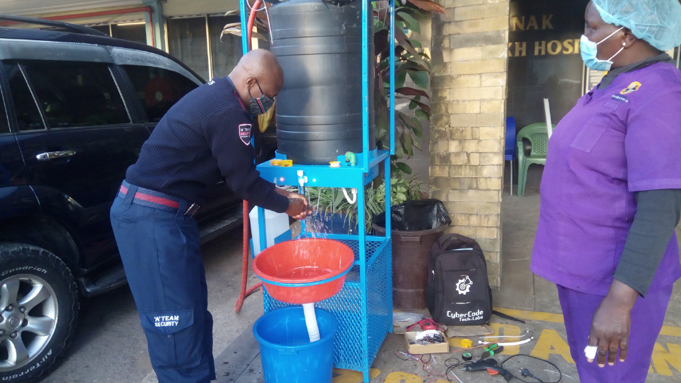

The Automated Handwashing
Station
Hand-washing should be a routine. This is key especially with the outbreak of Covid-19 in Kenya
and the world.
Recommendation from the WHO
1. Wash your hands frequently.
2. Maintain social distancing.
3. Avoid touching your face, practise respiratory hygiene.
We built the hand-washing station to reduce the spread of the virus at areas with high traffic. Our
station is unique and has the following features:
Features
• Double sided- Can accommodate more users at the same time, reducing queuing at your
place of business.
• No contact- Users do not touch anything with their hands, reducing risk.
• Is an advertising tool- Promote your business at one of the most trafficked point of your
establishment.